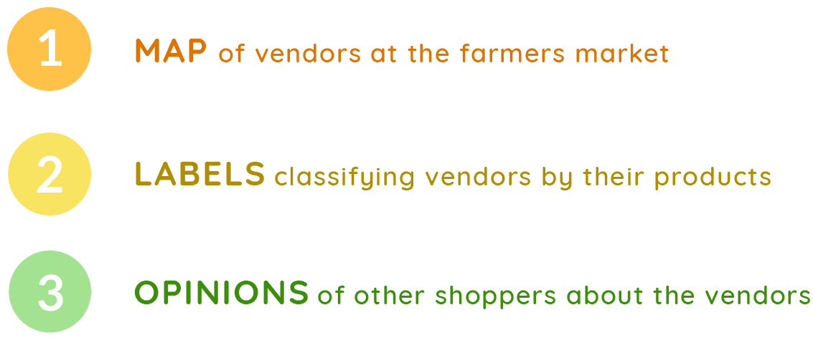

MarkIt is a prototype review app for non-permanent marketplace vendors, created for course 4.051: Human Factors in Innovation and Design Strategy. It was presented to professional experiential designers from the design consultancy Continuum as well as MIT architecture faculty, and was met with enthusiastic reviews.
skills
Prototyping, User Experience Design, User Experience Research
date
Fall 2018
field research
The motivation for MarkIt came from preliminary research by visiting the Copley Square Farmers Market in Boston with several classmates.
Throughout our visit, we took note of difficulties we experienced while browsing and shopping. I then organized our notes into three categories to address in my project.
opportunity statement
The three categories of difficulties had a common factor, which was that they stemmed from disorientation caused by unfamiliarity with the vendors, products, and layout of the market. Thus, I decided to focus my design to answer this question:
How might we better inform shoppers in the farmers market
so that they feel more directed while shopping?
storyboards & personas
An important consideration in deciding what product to design was that although my target demographic was first-time shoppers, I did not want to introduce a product that disrupts the experiences of those who enjoy the market as they already know it.
Keeping this in mind, I created a storyboard visualizing a reimagined farmers market experience following two common personas for first-time shoppers.
need-finding
While creating the storyboard, I found three forms of information that are currently unavailable and would improve the experience of first time shoppers:​
final prototype
The final prototype is a product similar to existing review apps such as Yelp. However, it has implications for marketplaces, which are not well-accounted for in such products.
Unlike Yelp, MarkIt distinguishes reviews by specific vendors and displays the specific location of vendors' booths in the market.
Although I envisioned a physical map in my storyboard, I ultimately decided to incorporate it into a digital solution due to the adaptability of a digital map to changes in the farmers market.
interactive map
label search
reviews

The final prototype was created using Adobe Xd and Adobe Illustrator.